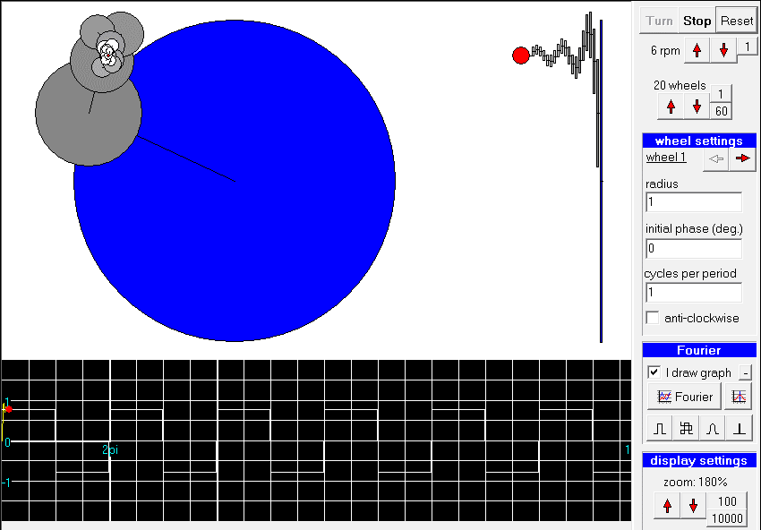
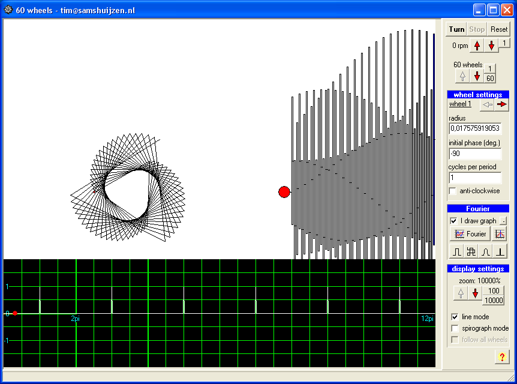

Sixty Wheels is a Windows application for illustrating the concepts of Fourier Series and Harmonic Analysis. The application provides 60 turning wheels which can be connected to each other at any point on their perimeter. The radius, phase and turning speed can be set for each wheel. The program shows the front and side view of the turning wheels. The path followed by the side view is plotted against time on a graph.
Optionally, you can draw a periodic waveform directly on the graph (when the "I draw graph" option is checked). You can then click the "Fourier" button and the application will calculate the sizes, phases and speeds of the wheels to reproduce the waveform. Some presets with interesting signals are also included.
The program is free and intended for educational purposes. There is no user manual, just feel free to experiment. The downloadable file is a Windows executable program in a zip file. Just download the zip file, extract the executable and start it up.
To get started:
- Start up the program.
- Click the "Turn" button.
-
Click the "60" button.
You should now see 60 wheels turning. -
Click one of the 4 preset buttons (the small buttons in the "Fourier" tab).
This will load different wave forms and the necessary wheels to reproduce them. - When the "I draw graph" option is checked, you can draw a wave form on the graph. After drawing a graph, click the "Fourier" button. It will then calculate all the wheels necessary to reproduce the graph. You might need to play with the options in the "Display settings" tab to get a good view.
Note: The e-mail address shown in the program is not correct.
My e-mail: timsamshuijzen@gmail.com


2002